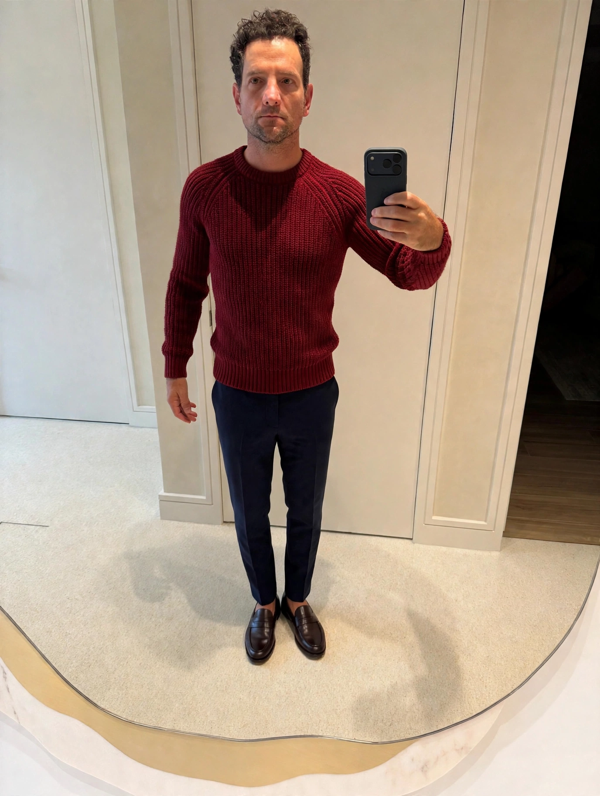

Outfit of the day
Palm Beach, Florida
Worn favourites
New favourites
Style Icons
The House Rules — what the engine enforces
Distilled from the canon — and from every icon you add yourself. Every look the Studio builds is checked against these before it reaches you.
- 01Fit before everythingSleeve length, trouser break, a nipped waist. Kraft's rule: get the details right and even an off-the-peg suit looks bespoke; get them wrong and a $7,000 suit looks borrowed.
- 02Three colours, maximumSquarzi's discipline — navy, olive, white, brown and one accent at most. A fourth colour is a decision, not an accident.
- 03Icons and palettes are separate layersAn icon's own colours are never recoloured to fit a plate — Kraft is mostly neutrals, and the engine respects that absolutely. A palette brought in beside an icon only offers colour combinations that already fit the icon's world; the icon leads, the palette supports.
- 04One tailored piece anchors casualA blazer over denim, Oxfords with white jeans — Squarzi and Agnelli both build street looks around a single dressed element.
- 05Worn-in beats box-freshClothes should look lived in, never costumed. Vintage drape, soft shoulders, suede over polished leather when the day allows.
- 06Dress for the occasion in front of youKraft again: if the invitation says black tie, it means black tie. The engine reads the occasion field literally.
- 07Buy once, buy qualityNatural fibres, real construction, pieces kept for years. No trend is copied slavishly — fashion inspires, it doesn't instruct.
- 08Know your trademarkEvery icon carries one — Grant's high collars, Agnelli's watch over the cuff, and whatever signature your own icons bring. When a colour or cut works for you, the engine returns to it instead of reinventing you weekly.
Find me
Describe what you're after — your size comes from your Profile — then search for it, or keep the brief here.
Profile
Your measurements and your location — Find me sizes every search from here, and recommendations follow the weather where you are.
Location & weather
Checking the weather there…
Home is the default. Pick another place while you travel and the outfit of the day — and looks with no season chosen — follow the weather there. Come back home with one tap.
Your data — backup & restore
Everything Wardrobe keeps — closet, watches, looks, palettes, icons, finds, profile — lives on this device. Export a backup file and keep it somewhere safe; import it on a new phone and everything comes back exactly as it was.